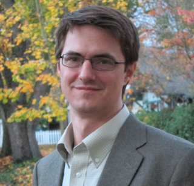

Bill Howe
Associate Professor, Information School
Adjunct Associate Professor, Computer Science & Engineering
Adjunct Associate Professor, Electrical Engineering
Program Director and Faculty Chair, UW Data Science Masters Degree
Director, Urbanalytics Lab
Founding Associate Director and Senior Data Science Fellow, UW eScience Institute
University of Washington
Short Bio |
Curriculum Vitae |
NSF-style biosketch |
NIH-style biosketch
billhowe at uw.edu | Office: MGH 310 in the iSchool DataLab
I am an Associate Professor in the Information School, Adjunct Associate Professor in Computer Science & Engineering, and Associate Director and Senior Data Science Fellow at the UW eScience Institute. I am a co-founder of Urban@UW, and with support from the MacArthur Foundation and Microsoft, I lead UW's participation in the MetroLab Network. I created a first MOOC on Data Science through Coursera, and I led the creation of the UW Data Science Masters Degree, where I serve as its first Program Director and Faculty Chair. I serve on the Steering Committee of the Center for Statistics in the Social Sciences.
My group's research aims to make the techniques and technologies of data science dramatically more accessible, particularly at scale. Our methods are rooted in database models and languages, though we sometimes work in machine learning, visualization, HCI, and high-performance computing. We are an applied, systems-oriented group, frequently sourcing projects through collaborations in the physical, life, and social sciences.
News
- July 26, 2018: I'm giving an invited talk at NSF on our work on algorithmic curation of science data repositories.
- July 21, 2018: Best paper award Our paper on DRACO using answer set programming to model visualization recommendation rules won best paper at InfoVis 2018! Congratulations to Dominik and the whole team!
- July 18, 2018: I presented our paper on EZLearn at IJCAI 2018 in Stockholm. EZLearn combines distant supervision and co-learning to avoid the need for training data in applications that have access to noisy free-text descriptions of data, especially in science.
- July 10, 2018: Congratulation to Kanit (Ham) Wongsuphasawat for defending his thesis on visualization recommendation systems! Ham is joining Apple as a Research Scientist.
- July 2, 2018: New workshop paper on removing bias from transportation data at BiDU - Workshop on Big Social Data and Urban Computing co-located with VLDB 2018
- June 21, 2018: I represented our BIGDATA grant on Foundations of Responsible Data Science and the West Big Data Hub at the combined BIGDATA PI meeting and Big Data Hubs meeting at NSF this week.
- June 14, 2018: New workshop paper accepted at DSDAH 2018, co-located with KDD, on Classifying Digitized Art by Type and Time Period
- June 14, 2018: Great discussion at our session on Responsible Data Science at SIGMOD 2018 in Houston
- June 11, 2018: New workshop paper accepted at BigScholar 2018, co-located with KDD, on Central Figure Identification for scientific papers.
- May 3, 2018: New blog post on nutritional labels for datasets and models is up at Freedom to Tinker. This post expands on our SIGMOD 2018 demo on Nutritional Labels for Rankings at SIGMOD 2018
- April, 2018: Congratulations to Maxim Grechkin for defending his thesis on algorithmic curation. Max joined facebook's integrity team working on claim verification as a research scientist.
Projects
{% for post in site.categories.projects limit:10 %}
{% assign loopindex = forloop.index | modulo: 2 %}
{% if loopindex == 1 %}
{% endif %}
{% include project.shtml %}
{% if loopindex == 0 %}
{% endif %}
{% endfor %}
See all projects...